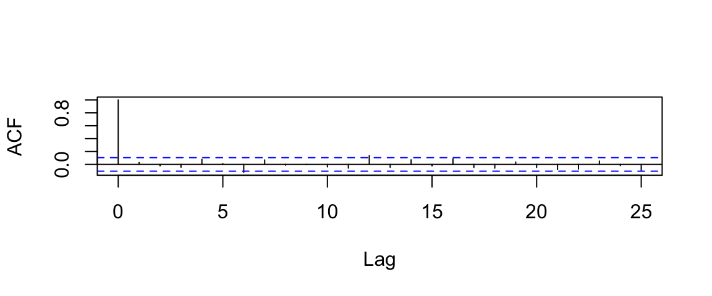
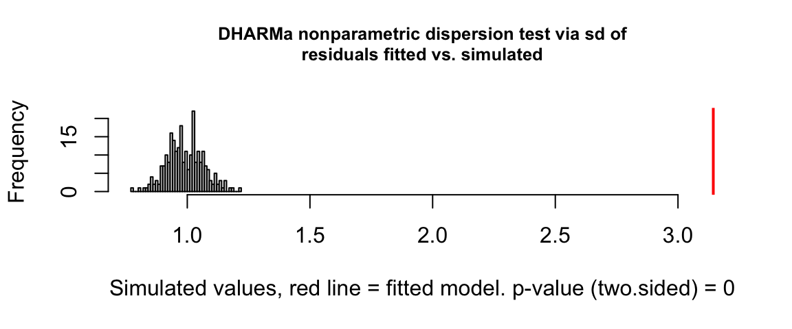
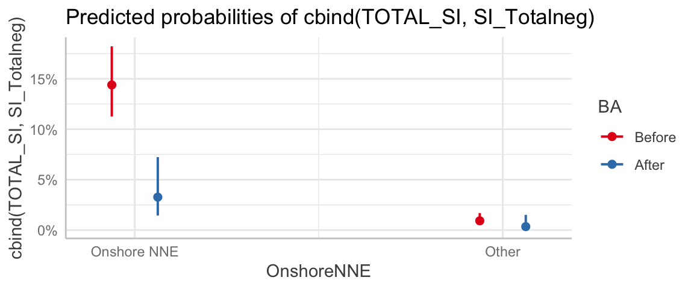

32 Models for Overdispered Binary Data
32.1 Section Learning Outcomes
We’ve already considered a pretty diverse set of types of response variables, but there are still more out there!
In addition learning about beta regression this module, we’ll also consider: what happens (if you experience the very rare case) when binary data is overdispersed? Spoiler: You use a quasi-binomial regression model…
By the end of the module you will:
- Fit, assess, and interpret overdispersed binary GLMs in R
32.2 Text Reference
Recommended reading for the materials covered in this tutorial can be found in:
It’s suggested that you consider consulting these papers after doing this tutorial, with particular focus on any topics you found most challenging.
32.3 Overdispersion, revisited
We first encountered the term overdispersion when modeling count data. Overdispersion (for count data) is the variance of residuals being much larger than expected according to a Poisson model, that is, the variance of residuals being larger than the predicted response value. It was present so often, in fact, that we more or less abandoned Poisson regression altogether and opted for negative binomial models (which can account for overdispersion) as a default for count response variables.
But when learning about binary regression, we didn’t even mention overdispersion?
That’s because it is MUCH more rare for binary data! In fact, I’ve only encountered one real example…which you’ll soon see too.
The definition of overdispersion is similar: binary data are overdispersed if the variance of the residuals is larger than expected, that is, larger than a binomial distribution would predict it to be.
32.4 Swimmer’s itch
The dataset we’ll consider is from research by Calvin professor Randall DeJong into the parasite that causes swimmer’s itch.
Swimmer’s itch is an itchy rash caused by a parasite; people often get it after swimming in waters where the parasite is present:

image above courtesy of US Centers for Disease Control
32.5 CSA Data Collection
Swimmer’s itch has been a common problem at Crystal Lake in Michigan, and staff at the Congregational Summer Assembly (CSA) waterfront there collected the data used in published research, and by us today. The data have been used by the Crystal Lake Watershed Association to combat swimmer’s itch, and in peer-reviewed scientific research too - so this case study is a great example of scientists and citizens partnering together to solve a community problem.

Image: Congregational Summer Assembly beach, photo published in the Benzie Country Record Patriot
32.6 Solutions
As understanding of how swimmer’s itch spreads has improved, the Crystal Lake Watershed Association has been able to relocate merganser ducks (the video below shows their methods) and reduce infections. So this work has had real, practical impact.
32.7 Swimmer’s itch data
Prof. DeJong has ongoing research using data provided by the CSA, including the 2023 paper “Swimmer’s itch control: timely waterfowl brood relocation significantly reduces an avian schistosome population and human cases on recreational lakes” and in preparation, to understand whether the merganser relocation intervention helps reduce swimmer’s itch or not. We will consider one example dataset, here called CSAdata.
glimpse(CSAdata)Rows: 349
Columns: 7
$ Date <date> 2013-06-24, 2013-06-25, 2013-06-26, 2013-06-27, 2013-06-2…
$ TOTAL_SI <dbl> 12, 0, 0, 22, 0, 0, 12, 0, 27, 0, 0, 0, 0, 0, 0, 0, 0, 8, …
$ SI_Totalneg <dbl> 34, 42, 46, 7, 40, 69, 68, 86, 85, 70, 94, 73, 86, 73, 61,…
$ TOTAL_SWIM <dbl> 46, 42, 46, 29, 40, 69, 80, 86, 112, 70, 94, 73, 86, 73, 6…
$ OnshoreNNE <chr> "Onshore NNE", "Onshore NNE", "Other", "Onshore NNE", "Oth…
$ POS_SWIM <dbl> 0.26086957, 0.00000000, 0.00000000, 0.75862069, 0.00000000…
$ BA <fct> Before, Before, Before, Before, Before, Before, Before, Be…Variables in the dataset include:
Dateof data collection and swimmer’s itch testingTOTAL_SI, the number of tests that were positive for swimmer’s itchSI_Totalneg, the number of tests that were negative for swimmer’s itchOnshoreNNE, whether or not there was an onshore North/Northeast wind. Since the location where most of the parasites live is located a certain direction from the beach, the number of cases seen at the CSA beach varies a lot depending on whether or not the prevailing wind is carrying the parasites toward the beach.POS_SWIMThe number of positive tests divided by the total number of swimmersBA(standing for “Before and After”): whether the data point was collected before or after the intervention where the mergansers were relocated.
Consider whether or not this scenario can be considered to be the result of a set of binary trials (where each one results in either a “success” or a “failure”), or not.
If debating between and “original” format of the possible response variable and a derived quantity, it usually works better (and stays truer to the understanding of the experts who designed the study and collected the data) to model the original.
32.8 Data Viz
Researchers hypothesized that the intervention would reduce the number of cases of swimmer’s itch, and that the wind direction would serve as a moderator.
Does an initial exploration of the data seem consistent with this idea? See what you think…feel free to begin with the graph below and try your own variations if you wish!
32.9 Model
Will the model verify the patterns we see in our graph(s) – that the intervention worked to reduce swimmer’s itch, and that the presence of an onshore NNE wind moderates that impact, with more cases in NNE wind and larger reductions in cases without NNE winds?
Let’s fit a model (based on the plans determined so far).
Before we can get any answers, better do some model assessment!
32.10 Assessment
Residual Independence
acf(resid(CSA_logistic), main = '')
No issues here: all the ACF values at lags greater than 0 are (almost) within the confidence bounds, so we have no evidence of any problem with the residual independence condition!
Mean-Variance and Linearity
Uh-oh. All the red does not seem to be a good sign. And it looks like the spread of the residuals for some fitted values is much less than others.
Since our model has only two predictors, both categorical, there are only 4 unique fitted values. In a case like this, plotResiduals() defaults to treating the fitted values as categorical. This makes sense, but to get a plot more like what we’re used to (with points, rather than boxplots) we can do:
However we make the graph, we have a big problem: The mean-variance relationship is not as our model expects it to be.
We can see this because the spread of the points in the scaled residual plot is not uniform vertically (the fact that they are arranged in “columns” is not the problem here - it’s the non-uniform up-and-down spread that’s the issue).
(We don’t have a clear indication of a linearity issue, though, and as all our predictors are categorical there can’t actually be such a problem anyway!)
32.11 Quasi-Binary Regression
As mentioned before, this particular condition violation is very rare. But if you run into it, you can fit a modified version of a binary regression model called quasi-binary regression. Essentially, code-wise, we just change the family to quasibionimal() (and use the glm() function rather than glmmTMB() for fitting the model):
32.12 More Assessment
Does the scaled residual plot look better now?
Ummm…uh-oh. We can’t actually make the plot; the necessary functions to do so are “not implemented.”
The DHARMa package does have a test for overdispersion; if this returns a small p-value, that indicated that we have strong evidence against the null hypothesis of no overdispersion.
Normally, we’d prefer to use the plot, since we are making judgement calls rather than trying to make inferences about a truth about a population of interest…but since we are not able to make the graph in this case, we’ll try the test (on our original non-quasi-binary model):
testDispersion(CSA_logistic)
DHARMa nonparametric dispersion test via sd of residuals fitted vs.
simulated
data: simulationOutput
dispersion = 3.1709, p-value < 2.2e-16
alternative hypothesis: two.sidedDefinite evidence of overdispersion there.
While we can’t verify that the mean-variance condition is perfectly met for the quasi-binomial regression model, we can safely assume that it’s got to be a lot better than the binomial regression, since it does account for overdispersion (which we definitely have present).
32.13 “Quasi” & Selection
The “quasi” in the name “quasi-binomial” is because this model is fitted using “quasi-likelihood” instead of likelihood!
We won’t go into the mathematical details here, but one consequence is that we won’t have a full estimate of the likelihood of our fitted model and so…
we can’t really use AIC or BIC for selection
as we have for other models. (But car::Anova() still has a method for quasi-binary regression models, so we can still do selection via ANOVA.)
32.14 Selection
car::Anova(CSA_quasi)Analysis of Deviance Table (Type II tests)
Response: cbind(TOTAL_SI, SI_Totalneg)
LR Chisq Df Pr(>Chisq)
BA 20.062 1 7.499e-06 ***
OnshoreNNE 115.865 1 < 2.2e-16 ***
BA:OnshoreNNE 0.394 1 0.5301
---
Signif. codes: 0 '***' 0.001 '**' 0.01 '*' 0.05 '.' 0.1 ' ' 132.15 Prediction Plots
So, wind direction and merganser relocation both matter. How much? And what direction are the effects?
We need to know these details to choose when it’s safest to swim!
predict_response(CSA_quasi,
terms = c('OnshoreNNE', 'BA')) |>
plot()Some of the focal terms are of type `character`. This may lead to
unexpected results. It is recommended to convert these variables to
factors before fitting the model.
The following variables are of type character: `OnshoreNNE`Ignoring unknown labels:
• linetype : "BA"
• shape : "BA"
32.16 Swimmer’s Action Items
Based on this, when would you feel safest swimming?
The advice the Crystal Lake Watershed Association gives, based at least partly on these results, is to avoid swimming after there has been an onshore (NNE) wind.
News articles have also reported that in 2023, swimmer’s itch cases are WAY up after merganser relocations were banned to prevent avian flu spread…